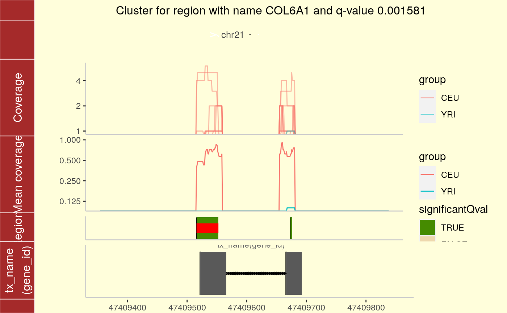

For a given region found in calculatePvalues, plot the coverage for the cluster this region belongs to as well as some padding. The mean by group is shown to facilitate comparisons between groups. If annotation exists, you can plot the trancripts and exons (if any) overlapping in the vicinity of the region of interest.
plotCluster( idx, regions, annotation, coverageInfo, groupInfo, titleUse = "qval", txdb = NULL, p.ideogram = NULL, ... )
| idx | A integer specifying the index number of the region of interest. This region is graphically highlighted by a red bar. |
|---|---|
| regions | The |
| annotation | The output from running matchGenes on the output from calculatePvalues. |
| coverageInfo | A DataFrame resulting from
loadCoverage using |
| groupInfo | A factor specifying the group membership of each sample. It will be used to color the samples by group. |
| titleUse | Whether to show the p-value ( |
| txdb | A transcript data base such as
|
| p.ideogram | If |
| ... | Arguments passed to other methods and/or advanced arguments. Advanced arguments: The maximum number of base-pairs to extend the view (on each side) before and after the region cluster of interest. For small region clusters, the one side extension is equal to the width of the region cluster. Column subset in case that it was specified in preprocessCoverage. If |
A ggplot2 plot that is ready to be printed out. Tecnically it is a ggbio object. The region with the red bar is the one whose information is shown in the title.
See the parameter significantCut in
calculatePvalues for how the significance cutoffs are
determined.
loadCoverage, calculatePvalues, matchGenes, plotIdeogram
## Load data library("derfinder") ## Annotate the results with bumphunter::matchGenes() library("bumphunter")#>#>#>#>#> #>#> #> #> #> #>#> #> #>#> #> #> #> #> #> #> #>#> #>#> #> #>#>#>#>#>#>#>#>library("TxDb.Hsapiens.UCSC.hg19.knownGene")#>#>#>#> #> #> #> #>library("org.Hs.eg.db")#>genes <- annotateTranscripts( txdb = TxDb.Hsapiens.UCSC.hg19.knownGene, annotationPackage = "org.Hs.eg.db" )#>#>#>#>annotation <- matchGenes(x = genomeRegions$regions, subject = genes) ## Make the plot plotCluster( idx = 1, regions = genomeRegions$regions, annotation = annotation, coverageInfo = genomeDataRaw$coverage, groupInfo = genomeInfo$pop, txdb = TxDb.Hsapiens.UCSC.hg19.knownGene )#> Warning: geom(ideogram) need valid seqlengths information for accurate mapping, #> now use reduced information as ideogram...#> Warning: `panel.margin` is deprecated. Please use `panel.spacing` property instead#> Warning: `panel.margin` is deprecated. Please use `panel.spacing` property instead#>#>#>#>#>#>#>#>#>#>#>#> Warning: `quo_expr()` is deprecated as of rlang 0.2.0. #> Please use `quo_squash()` instead. #> This warning is displayed once per session.#> Warning: `panel.margin` is deprecated. Please use `panel.spacing` property instead#> Warning: `panel.margin` is deprecated. Please use `panel.spacing` property instead#> Warning: `panel.margin` is deprecated. Please use `panel.spacing` property instead#> Warning: `panel.margin` is deprecated. Please use `panel.spacing` property instead#> Warning: `panel.margin` is deprecated. Please use `panel.spacing` property instead#> Warning: `panel.margin` is deprecated. Please use `panel.spacing` property instead#> Warning: `panel.margin` is deprecated. Please use `panel.spacing` property instead#> Warning: `panel.margin` is deprecated. Please use `panel.spacing` property instead#> Warning: `panel.margin` is deprecated. Please use `panel.spacing` property instead#>#>#>#>#> Warning: Transformation introduced infinite values in continuous y-axis#> Warning: Transformation introduced infinite values in continuous y-axis## Resize the plot window and the labels will look good. if (FALSE) { ## For a custom plot, check the ggbio and ggplot2 packages. ## Also feel free to look at the code for this function: plotCluster }